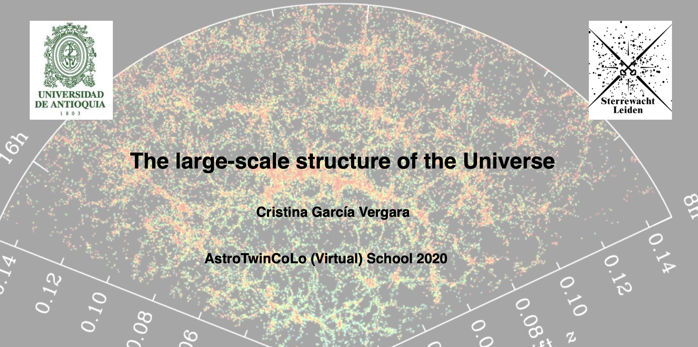
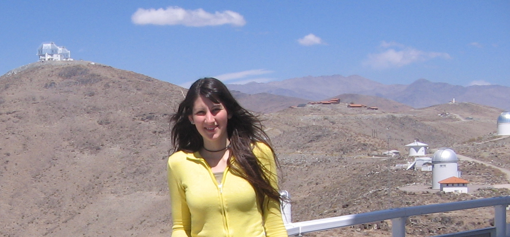
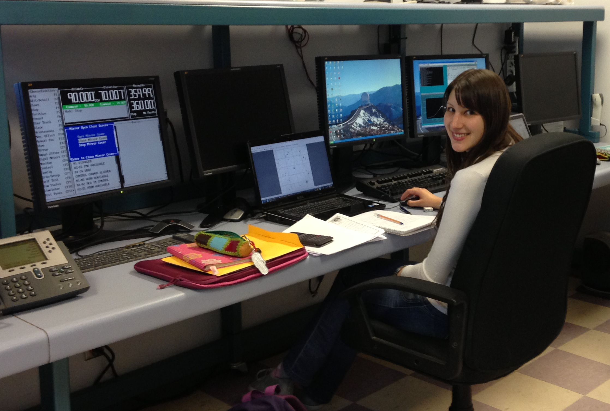
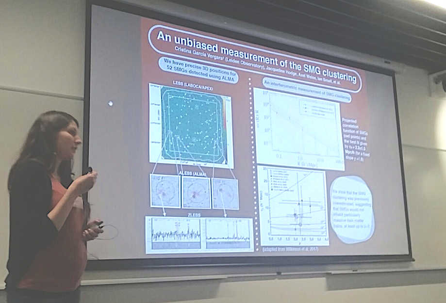

Teaching

AstroTwinColo 2020, University of Antioquia, Colombia
The Large scale structure of the universe
AstroTwinColo is an Astronomy Twinning Program between the Leiden Observatory (Netherlands) and the University of Antioquia (Colombia). I was an invited lecturer in 2020 to teach about "The Large scale structure of the universe". Below you will find the slides and the recorded lectures and worskhops.
Lecture1 (slides,video1,video2) --- Workshop1 (Tutorial,video1,video2)
Lecture2 (slides,video1,video2) --- Workshop2 (Tutorial,video1,video2)
Lecture3 (slides,video1,video2) --- Workshop3 (Tutorial,video1,video2)
Lecture4 (slides,video1,video2) --- Workshop4 (Tutorial,video1,video2)
Lecture5 (slides,video1,video2) --- Workshop5 (Tutorial,video1,video2)
Gallery

The Magellan telescopes behind me at Las Campanas Observatory, Chile

Observing high-redshift quasar pairs at Soar Telescope

Giving a talk in the "SMG20 - Twenty years of Submillimetre Galaxies: Star-forming galaxies at high redshifts" conference in UK

At Soar telescope

Presenting my poster in the "Demographics and Environment of AGN from Multi-Wavelength Surveys" conference in Greece
Contact
Cristina García Vergara
Leiden Observatory
Niels Bohrweg 2, P.O. Box 9513
2300 RA Leiden
The Netherlands
Tel: +31 (0) 71 527 8438
garcia@strw.leidenuniv.nl
© 2018 Exclusive. All rights reserved | Design by W3layouts.